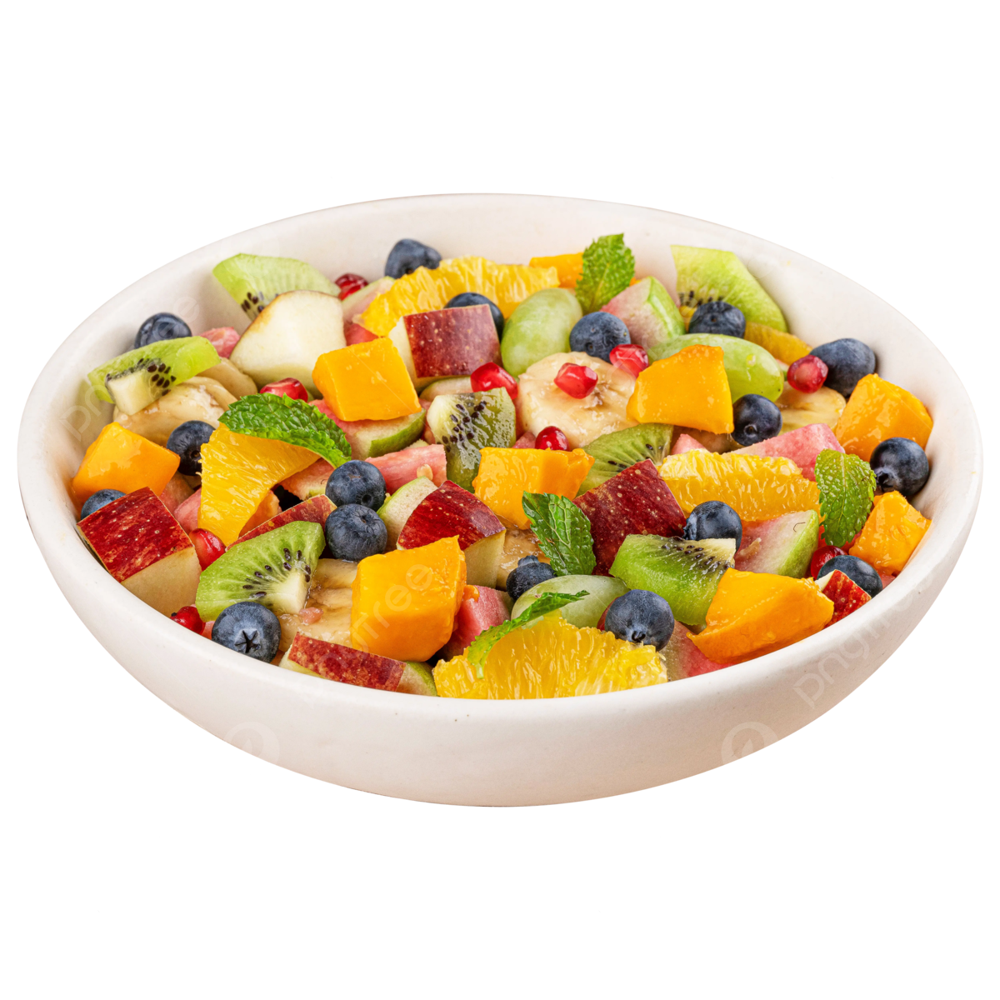

Bolo de Chocolate
Uma receita simples e deliciosa de bolo de chocolate.
Ingredientes:
- 1 xícara de farinha de trigo
- 1 xícara de açúcar
- 1/2 xícara de achocolatado
- 1/2 xícara de óleo
- 1 ovo
- 1 colher de fermento em pó
- 1 xícara de leite
Modo de Preparo:
- Preaqueça o forno a 180°C.
- Em uma tigela, misture todos os ingredientes até formar uma massa homogênea.
- Despeje a massa em uma forma untada e enfarinhada.
- Leve ao forno por cerca de 30 minutos ou até que, ao enfiar um palito, ele saia limpo.
Frango ao Gratinado
Receita cremosa e deliciosa de frango gratinado.
Ingredientes:
- 500g de peito de frango cozido e desfiado
- 1 xícara de requeijão cremoso
- 1/2 xícara de queijo mussarela ralado
- 1 colher de sopa de manteiga
- 1/2 cebola picada
- 1 dente de alho picado
- Sal e pimenta a gosto
Modo de Preparo:
- Refogue a cebola e o alho na manteiga até dourarem.
- Adicione o frango desfiado, o requeijão e o queijo mussarela, mexa até ficar bem cremoso.
- Tempere com sal e pimenta a gosto.
- Coloque tudo em uma travessa e leve ao forno para gratinar por 15 minutos a 180°C.

Salada de Frutas
Uma salada fresca e saudável para os dias quentes.
Ingredientes:
- 1 banana picada
- 1 maçã picada
- 1 laranja em gomos
- 1/2 melancia picada
- 1/2 abacaxi picado
- Suco de 1 limão
- 1 colher de mel (opcional)
Modo de Preparo:
- Em uma tigela, misture todas as frutas picadas.
- Adicione o suco de limão e o mel, se desejar.
- Mexa bem e sirva gelada.